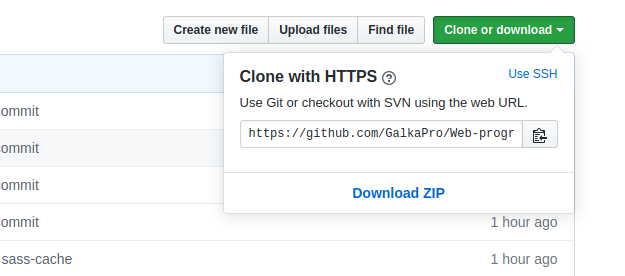

Ознакомиться с основами системы контроля версий Git, научиться работать с удаленным репозиторием Github
Git — это набор консольных утилит, которые отслеживают и фиксируют изменения в файлах (чаще всего речь идет об исходном коде программ, но вы можете использовать его для любых файлов на ваш вкус). С его помощью вы можете откатиться на более старую версию вашего проекта, сравнивать, анализировать, сливать изменения и многое другое. Этот процесс называется контролем версий. Существуют различные системы для контроля версий: SVN, Mercurial, Perforce, CVS, Bitkeeper и другие.
Git является распределенным, то есть не зависит от одного центрального сервера, на котором хранятся файлы. Вместо этого он работает полностью локально, сохраняя данные в папках на жестком диске, которые называются репозиторием. Тем не менее, вы можете хранить копию репозитория онлайн, это сильно облегчает работу над одним проектом для нескольких людей. Для этого используются сайты вроде github и bitbucket.
Установить git на свою машину очень просто:
Linux — нужно просто открыть терминал и установить приложение при помощи пакетного менеджера вашего дистрибутива. Для Ubuntu команда будет выглядеть следующим образом:
sudo apt update
sudo apt install git
Windows — используется git for windows, так как он содержит и клиент с графическим интерфейсом, и эмулятор bash.
OS X — проще всего воспользоваться homebrew. После его установки запустите в терминале:
brew install gitЕсть довольно много опций, с которыми можно играть, но мы настроим самые важные: имя пользователя и адрес электронной почты. Откройте терминал и запустите команды:
git config --global user.name "My Name"
git config --global user.email myEmail@example.com
Теперь каждое наше действие будет отмечено именем и почтой. Таким образом, пользователи всегда будут в курсе, кто отвечает за какие изменения — это вносит порядок.
Чтобы загрузить что-нибудь в удаленный репозиторий, сначала нужно к нему подключиться. В данном курсе будем использовать репозиторий https://github.com/GalkaPro/Web-programming. Для работы с репозиторием необходимо создать аккаунт на сервисе github. Для этого зайдите на GitHub и создайте свой аккаунт.
Для клонирования репозитория на компьютер перейдите в репозиторий на GitHub и нажмите кнопку Clone or download Проследите, чтобы появилась надпись Clone with HTTPS. Теперь нажмите на иконку буфера обмена для копирования-вставки (либо выделите ссылку и скопируйте ее).
Рисунок 7.1 Клонирование или скачивание репозитория
Откройте терминал и перейдите в директорию для копирования репозитория. Например для перехода в папку project и клонирования туда репозитория напечатайте следующую команду:
cd /home/user/project
git clone https://github.com/GalkaPro/Web-programming.git
Если вы не очень хорошо ориентируетесь в терминале, то переход по директориям можно осуществлять через команду cd. Например, откройте терминал и напечатайте ls для отображения перечня доступных директорий. Вполне возможно, что в этом списке вы сразу увидите нужную директорию, напечатайте cd /название нужной директории. Далее выполните команду git clone и склонируйте репозиторий в нужную директорию.
Если вдруг в терминале вы захотите «откатиться» на шаг назад, то напишите cd ..
Новый GitHub-репозиторий, склонированный в нужную папку, готов! Данная команда создает точную копию репозитория в вашей системе. Здесь вы сможете с ним работать, редактировать, индексировать изменения, создавать коммиты с изменениями и отправлять их на GitHub.
1. Проверка статуса проекта:
git status2. Добавление файлов в репозторий:
git add -A3. Создание коммитов:
git commit -m "Commit"Коммиты изменений добавляются в head (указатель), а не в удаленный репозиторий. Не забудьте заменить текст в кавычках. После внесения изменений создается снимок состояния репозитория, для чего используется команда commit. А через –m добавляется сообщение об этом снимке.
Сохраненные изменения и называются коммитом. При создании коммита вы добавляете сообщение о том, что именно менялось и почему. Так другие люди смогут лучше понять суть изменений.
Теперь ваши изменения сохранены в указателе локальной копии проекта. Для отправки изменений на удаленный репозиторий выполните команду:
git push origin masterВетвление (branching) используется в случае необходимости внести множество изменений в файлы вашего рабочего каталога, но эта работа экспериментальная – не факт, что всё получится хорошо. Вы бы не хотели, чтобы ваши изменения увидели другие сотрудники до тех пор, пока работа не будет закончена. Может просто ничего не коммитить до тех пор? Это плохой вариант. Мы уже знаем, что частые коммиты и пуши – залог сохранности вашей работы, а также возможность посмотреть историю изменений. К счастью, в Git есть механизм веток, который позволит нам коммитить и пушить, но не мешать другим сотрудникам.
Перед началом экспериментальных изменений вы должны создать ветку. У ветки есть имя. Пусть она будет называться my test work. Теперь все ваши коммиты будут идти именно туда. До этого они шли в основную ветку разработки – будем называть её master. Другими словами, раньше вы были в ветке master (хоть и не знали этого), а сейчас переключились на ветку my test work. Это выглядит так:
git checkout -b [новая_ветка]Весь лекционный материал и инструкции по выполнению лабораторных работ будут выкладываться в удаленный репозиторий на Github. Для работы с которым необходимо создать аккаунт на Github и сообщить его мне, для дальнейшего добавления в коллабораторы. После клонированиия проекта на локальный компьютер, необходимо открыть файл index.html в браузере. На данной локальной странице курса размещены материалы курса. Выполненные лабораторные работы необходимо загружать в репозиторий курса на Github в папку [фамилия студента] - файлы laboratory7.html, laboratory.css, laboratory.scss. Отчеты о выполненной ЛР, оформленные по требованиям, загружаются в гуглкласс.
git pull origin master
git checkout -b фамилия_студента
git status
git add -A
git commit -m "Commit"
git push origin фамилия_студента
В результате выполнения данной лабораторной работы должен быть создан аккаунт на Github, сброшено мне имя аккаунта для добавления в коллабораторы, клонирован репозиторий на локальный компьютер, создана новая ветка, в локальном репозитории создана новая папка с файлами laboratory7.html, laboratory7.css, с помощью которых вывести ФИО студента, группу, номер и тему лабораторной работы, дату выполнения работы. Загрузить новые файлы в удаленный репозиторий в свою ветку. Составить отчет о проделанной работе и сбросить его в гуглкласс.